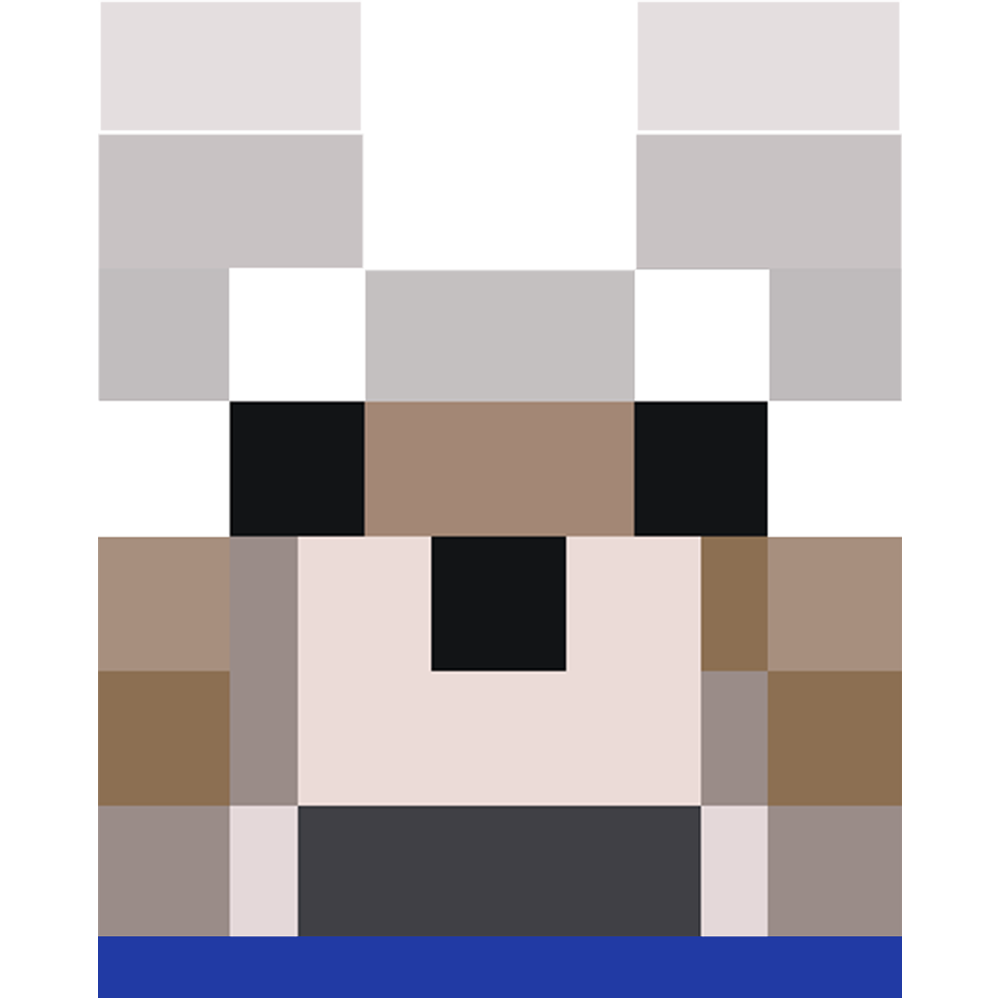

<nav class="navbar navbar-expand-lg navbar-light bg-light" style="background-color: blanchedalmond !important">
    <a class="navbar-brand" [routerLink]="['']"></a>
    <button class="navbar-toggler" type="button" data-toggle="collapse" data-target="#navbarSupportedContent" aria-controls="navbarSupportedContent" aria-expanded="false" aria-label="Toggle navigation">
      <span class="navbar-toggler-icon"></span>
    </button>

    <div class="collapse navbar-collapse" id="navbarSupportedContent">
      <ul class="navbar-nav mr-auto">
        <li class="nav-item">
          <a class="nav-link" [routerLink]="['/pets', 'create']"><i class="fas fa-plus fa-lg"></i> Add Pet</a>
        </li>
        <li class="nav-item">
          <a class="nav-link" href="https://twitter.com/scharderson"><i class="fab fa-twitter fa-lg"></i> Follow me</a>
        </li>
        <li class="nav-item">
          <a class="nav-link" href="https://github.com/AndersonSchmidt/pewdiepets"><i class="fab fa-github fa-lg"></i> Fork me</a>
        </li>
      </ul>
      <!-- <form class="form-inline my-2 my-lg-0">
        <input class="form-control mr-sm-2" type="search" placeholder="Search" aria-label="Search">
        <button class="btn btn-outline-success my-2 my-sm-0" type="submit">Search</button>
      </form> -->
    </div>
  </nav>
